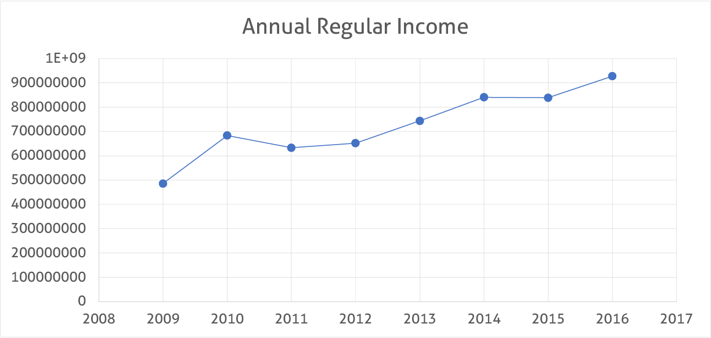

Economic Status
Tagaytay is doing quite well economically. As a second-class city, Tagaytay is earning an average of more than Php 20 million but less than Php 30 million. Tagaytay is the region's second-largest contributor to GDP. There are more employees and employers because of this. At the same time, industries in Tagaytay have a greater potential for creating better jobs.
Despite rapid urbanization of Tagaytay, agriculture remains an important part of the city's economy and development. As of 2009, it is recorded that there is about 1,292 hectares (3,190 acres) of agricultural land which is about 20 percent of the city's total land area.
The Taal volcano can be both an advantage and a disadvantage. While many people want to visit Tagaytay to see the wondrous sights of the Taal volcano, the fact that it is an active volcano can drag the economy down. The volcano erupted once in 2020, with ash covering most of the city and its surrounding areas. There were a few casualties, which had an impact on Tagaytay's economy. It took officials about two weeks to get back up and restart the region's economy. We must also remember what the pandemic has done to Tagaytay. Businesses were closed and jobs were lost in an instant, just like in any other region of the Philippines.

The city was once a cogon land after it was discovered during the Taal eruption. The soil has been proven to be rich in volcanic components, making it suitable for farming. The main agricultural products produced include pineapple, coffee, banana, root crops, cacao, camote, cassava, other fruits, and vegetables, and cut flowers, which are sold in both local and international markets.
Here is a graph of Tagaytay's Annual Regular Income.
| Fiscal Year | Annual Regular Income | Change |
|---|---|---|
| 2009 | 485425044.4 | - |
| 2010 | 683121179.1 | 40.73% |
| 2011 | 633100599.3 | -7.32% |
| 2012 | 651660328 | 2.93% |
| 2013 | 743626842.1 | 14.11% |
| 2014 | 840646833.8 | 13.05% |
| 2015 | 838988828 | -0.20% |
| 2016 | 927597281.8 | 10.56% |
Apart from Agriculture, Tagaytay is also thriving in the Tourism Industry. For years, the Department of Tourism (DOT) has named it the top tourist destination in Region IV-A, CALABARZON (Cavite-Laguna-Batangas-Rizal-Quezon).
The number of domestic and international tourists visiting the city increased significantly in 2019. In the first six months of that year, there were approximately 2.6 million visitors recorded in popular city destinations, a significant increase from the 1.1 million recorded the previous year.
The city's thriving tourism drives the growth of businesses, particularly hotels and accommodations, restaurants, malls, amusement parks, tour operators, and even small-scale souvenir shops. This creates numerous job opportunities for locals.
Tagaytay's strong economy, as well as its alluring image of vibrant tourism, boosts the real estate sector. Property developers have been busy occupying land with residential and commercial projects in recent years. The demand for real estate is expected to rise as infrastructure developments make the city more accessible for people all over the country.
According to a study conducted by the National Economic and Development Authority (NEDA) Region IV-A, Tagaytay City has reached critical levels in terms of road capacity, water supply, and air quality, putting strain on the city's physical and natural resources.
The most pressing issue is water supply, as the current supply of 23,340 m3/day is insufficient to meet the daily demand of 28,176 m3/day, which includes not only residents but also commercial establishments that cater to tourists. Without tourists, the current water supply will be sufficient to meet the projected population in 2026. Water rationing is being practiced by those interviewed for the study, indicating a water shortage.